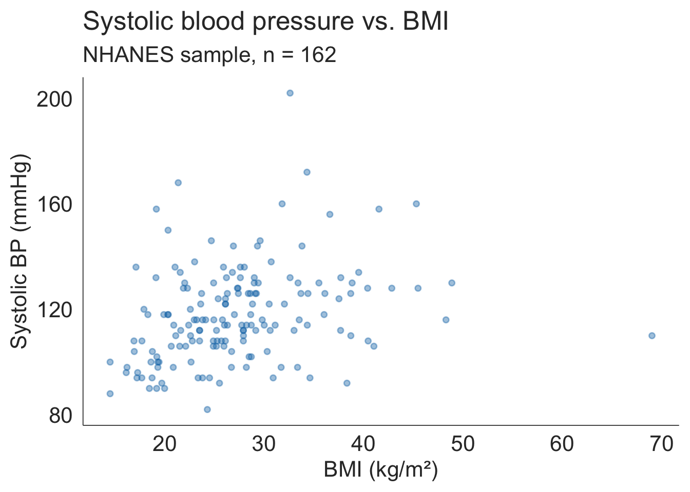
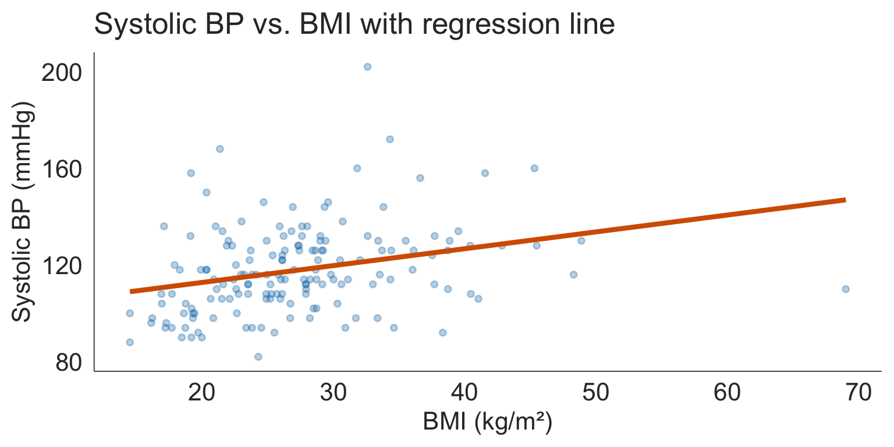

Correlation and Simple Linear Regression
Textbook Sections 1.6, 6.1-6.4
Learning Objectives
By the end of today’s lecture, you will be able to:
- Calculate and interpret Pearson and Spearman correlation coefficients
- Identify the components of the simple linear regression model
- Explain what ordinary least squares (OLS) minimizes
- Run a simple linear regression in R and interpret the output
- Check the LINE assumptions using diagnostic plots
- Interpret \(R^2\) as a measure of model fit
- Conduct and interpret inference for the population slope \(\beta_1\)
- Construct confidence and prediction intervals for new observations
Roadmap for Today
Part 1: Correlation
- Visualizing two continuous variables
- Pearson correlation: \(r\)
- Spearman correlation: a nonparametric bridge
- Correlation ≠ causation
Part 2: The SLR Model
- From correlation to regression
- Population model vs. estimated line
- Residuals and OLS
- Running
lm()in R - Interpreting slope and intercept
Part 3: Model Evaluation
- LINE assumptions
- Diagnostic plots in R
- \(R^2\): how much variation does the model explain?
Part 4: Inference and Prediction
- Hypothesis test for slope \(\beta_1\)
- Confidence interval for \(\beta_1\)
- Predicting new observations
- CI for mean response vs. prediction interval
Part 1: Correlation
The question: do two continuous variables move together?
We’ve spent the semester asking questions like:
- Does mean BP differ between groups?
- Is proportion with hypertension the same across age groups?
Now a new type of question: As BMI increases, does systolic blood pressure tend to increase too?
Both variables are continuous. We need new tools.
Response and explanatory variables
- A study will typically examine whether the values of a response variable differ as values of an explanatory variable change
- These roles guide how we set up plots and models
- The explanatory variable goes on the \(x\)-axis, the response on the \(y\)-axis.
- Sometimes we’re just interested in viewing the relationship between explanatory variables
- Approaches vary depending on whether the two variables are:
- Both numerical
- Both categorical
- One numerical and one categorical
When both variables are numerical, the scatterplot is our primary tool for visualizing the relationship.
Reading a scatterplot
When you look at a scatterplot, ask four questions:
1. Direction
- Positive: as \(X\) increases, \(Y\) tends to increase
- Negative: as \(X\) increases, \(Y\) tends to decrease
- None: no clear pattern
2. Form
- Linear: points follow a straight line
- Curved: some other shape
- No pattern
3. Strength
- How tightly do the points follow the pattern?
- Strong, moderate, weak
4. Unusual observations
- Outliers that don’t fit the trend
- Clusters or subgroups
Scatterplot for systolic BP vs. BMI
- Direction
- Positive
- Form
- Roughly linear
- Strength
- Moderate
- Not a tight cloud
- Unusual observations
- Some present

The Pearson correlation coefficient
The Pearson correlation coefficient \(r\) quantifies the strength and direction of the linear association between two continuous variables.
\[r = \frac{1}{n-1}\sum_{i=1}^{n}\left(\frac{x_i - \bar{x}}{s_x}\right)\left(\frac{y_i - \bar{y}}{s_y}\right)\]
With base R:
cor(nhanes_bp$BMI, nhanes_bp$BPSys1,
use = "complete.obs")[1] 0.2955122Using tidyverse:
nhanes_bp %>%
summarise(
r = cor(BMI, BPSys1,
use = "complete.obs")
)# A tibble: 1 × 1
r
<dbl>
1 0.296Describing associations between 2 numerical variables
Two variables \(X\) and \(Y\) are
Positively associated if \(Y\) increases as \(X\) increases
Negatively associated if \(Y\) decreases as \(X\) increases
- If there is no association between the variables, then we say they are uncorrelated or independent
The term “association” is a very general term
- Can be used for numerical or categorical variables
- Not specifically referring to linear associations
(Pearson) Correlation coefficient (\(r\))
- \(r = -1\) indicates a perfect negative linear relationship: As one variable increases, the value of the other variable tends to go down, following a straight line
- \(r = 0\) indicates no linear relationship: The values of both variables go up/down independently of each other
- \(r = 1\) indicates a perfect positive linear relationship: As the value of one variable goes up, the value of the other variable tends to go up as well in a linear fashion
- The closer \(r\) is to ±1, the stronger the linear association

Interpreting the correlation coefficient
Multiple published schemes exist for labeling the strength of \(r\) — and they don’t agree:
Common scheme
| \(|r|\) | Label |
|---|---|
| \(\geq 0.6\) | Strong |
| \(0.3 – 0.6\) | Moderate |
| \(< 0.3\) | Weak |
Another common scheme
| \(|r|\) | Label |
|---|---|
| \(> 0.8\) | Strong |
| \(0.5 – 0.8\) | Moderate |
| \(< 0.5\) | Weak |
Mukaka (2012)
| \(|r|\) | Label |
|---|---|
| \(0.9 – 1.0\) | Very high |
| \(0.7 – 0.9\) | High |
| \(0.5 – 0.7\) | Moderate |
| \(0.3 – 0.5\) | Low |
| \(0.0 – 0.3\) | Negligible |
Eight things you need to know about interpreting correlations (from University of Sussex)
Correlation ≠ causation
A high \(r\) tells you two variables are associated. It says nothing about whether one causes the other.
Classic confounders:
- Ice cream sales and drowning deaths both increase in summer (confounder: temperature)
- Shoe size and reading ability in children (confounder: age)
- Higher hospital admission rates associated with worse outcomes (confounder: severity of illness)
For our example:
BMI and systolic BP are associated — but the causal pathway is complex:
- BMI → metabolic syndrome → hypertension
- Shared causes: diet, physical activity, genetics
- Reverse causation is unlikely here but not impossible
Spearman correlation: the nonparametric alternative
Recall from Lesson 17: when data are skewed, contain outliers, or are ordinal, rank-based methods are more robust.
The Spearman correlation \(r_s\) is simply the Pearson correlation applied to the ranks of \(X\) and \(Y\):
- Rank all \(X\) values (1 = smallest)
- Rank all \(Y\) values (1 = smallest)
- Compute Pearson \(r\) on those ranks
When to use Spearman:
- Ordinal outcomes (pain scales, severity scores)
- Skewed continuous variables (viral loads, antibody titers)
- When outliers would distort Pearson \(r\)
Spearman correlation in R
In base R
cor(nhanes_bp$BMI, nhanes_bp$BPSys1,
method = "spearman",
use = "complete.obs")[1] 0.3610264More tidyverse way:
nhanes_bp %>%
summarise(
r_pearson = cor(BMI, BPSys1,
use = "complete.obs"),
r_spearman = cor(BMI, BPSys1,
method = "spearman",
use = "complete.obs")
)# A tibble: 1 × 2
r_pearson r_spearman
<dbl> <dbl>
1 0.296 0.361
The limitation of correlation
Correlation answers: how strongly are these two variables associated?
But researchers often want to know more:
- How much does systolic BP increase for each 1-unit increase in BMI?
- What systolic BP would we predict for a patient with BMI = 32?
- Is the association statistically significant — or could it be due to chance?
Part 2: The Simple Linear Regression Model
The regression line
A regression line describes how the mean of \(Y\) changes as \(X\) changes:
\[\hat{Y} = \hat{\beta}_0 + \hat{\beta}_1 X\]
The hat (^) on \(\hat{Y}\) signals this is an estimated value from the line — not the actual observed \(Y\).
Code
ggplot(nhanes_bp, aes(x = BMI, y = BPSys1)) +
geom_point(alpha = 0.3, color = "#0072B2", size = 1.5) +
geom_smooth(method = "lm", se = FALSE,
color = "#D55E00", linewidth = 1.5) +
labs(title = "Systolic BP vs. BMI with regression line",
x = "BMI (kg/m²)", y = "Systolic BP (mmHg)")
Population model vs. estimated line
| Symbol | Name | Type |
|---|---|---|
| \(Y\) | Response / outcome | Observed |
| \(X\) | Predictor / covariate | Observed |
| \(\beta_0\) | Intercept | Population parameter |
| \(\beta_1\) | Slope | Population parameter |
| \(\epsilon\) | Error term | Unobservable |
| \(\hat{\beta}_0\), \(\hat{\beta}_1\) | Estimated intercept / slope | Calculated from data |
Residuals: the building block of regression
For each observation \(i\), the residual is the difference between what we observed and what the line predicted:
\[\hat{\epsilon}_i = Y_i - \hat{Y}_i\]
- Points above the line:
- positive residual (\(Y_i > \hat{Y}_i\))
- Points below the line:
- negative residual (\(Y_i < \hat{Y}_i\))
- Points on the line:
- residual = 0 (rare in practice)

Ordinary Least Squares (OLS)
Key question: With infinitely many possible lines we could draw through the data, which one is best?
OLS answer: Choose the line that minimizes the Sum of Squared Errors (SSE):
\[SSE = \sum_{i=1}^{n} \hat{\epsilon}_i^2 = \sum_{i=1}^{n}(Y_i - \hat{Y}_i)^2\]
Why square the residuals?
- Positive and negative residuals would cancel
- Squaring penalizes large errors more than small ones
- Makes the math tractable (calculus gives closed-form solutions)
The OLS estimates \(\hat{\beta}_0\) and \(\hat{\beta}_1\) are the values that make SSE as small as possible. R’s lm() finds these automatically.
Running SLR in R: lm() + tidy()
# Fit the model
model_bp <- lm(BPSys1 ~ BMI, data = nhanes_bp)
library(broom)
# Tidy output: coefficients, SE, t, p, CI
tidy(model_bp, conf.int = TRUE)# A tibble: 2 × 7
term estimate std.error statistic p.value conf.low conf.high
<chr> <dbl> <dbl> <dbl> <dbl> <dbl> <dbl>
1 (Intercept) 98.8 5.05 19.6 2.88e-44 88.8 109.
2 BMI 0.698 0.178 3.91 1.35e- 4 0.345 1.05
Our estimated regression equation:
\[\widehat{\text{Systolic BP}} = 98.83 + 0.70 \times \text{BMI}\]
Interpreting the slope and intercept
\[\widehat{\text{Systolic BP}} = 98.83 + 0.70 \times \text{BMI}\]
Part 3: Model Evaluation
The LINE conditions
For the regression model to give valid estimates and reliable inference, four conditions must hold. We remember them as LINE:
| Letter | Condition | How to check |
|---|---|---|
| L | Linearity — the relationship between \(X\) and \(Y\) is linear | Scatterplot; residual plot |
| I | Independence — observations are independent of each other | Study design |
| N | Normality — residuals are approximately normally distributed | QQ plot of residuals |
| E | Equal variance — residuals have constant variance across all \(X\) values | Residual plot |
Diagnostic plots in R
Code
# TODO -- pick up here
aug <- augment(model_bp)
p1 <- ggplot(aug, aes(x = .fitted, y = .resid)) +
geom_point(alpha = 0.4, color = "#0072B2", size = 1.5) +
geom_hline(yintercept = 0, linetype = "dashed", color = "grey50") +
geom_smooth(se = FALSE, color = "#D55E00", linewidth = 1) +
labs(title = "Residual plot",
subtitle = "Checks L and E",
x = "Fitted values (ŷ)",
y = "Residuals")
p2 <- ggplot(aug, aes(sample = .resid)) +
stat_qq(alpha = 0.4, color = "#0072B2", size = 1.5) +
stat_qq_line(color = "#D55E00", linewidth = 1) +
labs(title = "Normal QQ plot of residuals",
subtitle = "Checks N",
x = "Theoretical quantiles",
y = "Sample quantiles")
library(patchwork)
p1 + p2
model_bp <- lm(BPSys1 ~ BMI, data = nhanes_bp)Reading the diagnostic plots
The \(R^2\) statistic
\(R^2\) (the coefficient of determination) tells us: what proportion of the variability in \(Y\) is explained by the linear relationship with \(X\)?
\[R^2 = 1 - \frac{SSE}{SST} = 1 - \frac{\sum(Y_i - \hat{Y}_i)^2}{\sum(Y_i - \bar{Y})^2}\]
- \(R^2 = 0\): the model explains none of the variability in \(Y\) — no better than predicting \(\bar{Y}\) for everyone
- \(R^2 = 1\): the model explains all of the variability — all points fall exactly on the line
- For simple linear regression: \(R^2 = r^2\) (square of the Pearson correlation)
# glance() gives model-level summaries
glance(model_bp) %>%
select(r.squared, sigma, nobs)# A tibble: 1 × 3
r.squared sigma nobs
<dbl> <dbl> <int>
1 0.0873 17.5 162Interpreting \(R^2\) in context
For our model: \(R^2\) = 8.7%
Part 4: Inference and Prediction
What are we testing?
We have an estimated slope \(\hat{\beta}_1\). But is the true population slope \(\beta_1\) actually different from zero?
\[H_0: \beta_1 = 0 \qquad \text{vs.} \qquad H_A: \beta_1 \neq 0\]
The test statistic is a \(t\)-statistic:
\[t = \frac{\hat{\beta}_1 - 0}{SE_{\hat{\beta}_1}} = \frac{\hat{\beta}_1}{SE_{\hat{\beta}_1}}\]
which follows a \(t\)-distribution with \(df = n - 2\) under \(H_0\).
Inference for slope \(\beta_1\): all 6 steps
Step 1: Hypotheses
\[H_0: \beta_1 = 0 \quad \text{(no linear association between BMI and systolic BP)}\] \[H_A: \beta_1 \neq 0 \quad \text{(a linear association exists)}\]
Step 2: Significance level \(\alpha = 0.05\)
Step 3: Check assumptions LINE conditions — checked via diagnostic plots on previous slides ✓
Step 4: Test statistic
b1_row <- tidy(model_bp) %>% filter(term == "BMI")
(t_stat <- b1_row$statistic)[1] 3.912713\[t = \frac{\hat{\beta}_1}{SE_{\hat{\beta}_1}} = \frac{0.698}{0.178} = 3.91\]
Inference for slope \(\beta_1\) (continued)
Step 5: p-value
(p_val <- b1_row$p.value)[1] 0.0001346729Or directly from the regression table:
tidy(model_bp, conf.int = TRUE)# A tibble: 2 × 7
term estimate std.error statistic p.value conf.low conf.high
<chr> <dbl> <dbl> <dbl> <dbl> <dbl> <dbl>
1 (Intercept) 98.8 5.05 19.6 2.88e-44 88.8 109.
2 BMI 0.698 0.178 3.91 1.35e- 4 0.345 1.05Step 6: Conclusion
We reject \(H_0\) at the \(\alpha = 0.05\) level (t = 3.91, df = 160, p < 0.001). There is strong evidence of a positive linear association between BMI and systolic blood pressure.
Confidence interval for \(\beta_1\)
The 95% confidence interval for the population slope uses the same logic as all our previous CIs:
\[\hat{\beta}_1 \pm t^*_{n-2} \cdot SE_{\hat{\beta}_1}\]
where \(t^*_{n-2}\) is the critical value from the \(t\)-distribution with \(n - 2\) degrees of freedom.
tidy(model_bp, conf.int = TRUE) %>%
filter(term == "BMI") %>%
select(term, estimate, conf.low, conf.high)# A tibble: 1 × 4
term estimate conf.low conf.high
<chr> <dbl> <dbl> <dbl>
1 BMI 0.698 0.345 1.05
Prediction: using the model for new observations
Once we have a regression line, we can plug in any \(X\) value to get a predicted \(Y\):
\[\hat{Y} = \hat{\beta}_0 + \hat{\beta}_1 \cdot X^*\]
new_data <- data.frame(BMI = c(25, 30, 35))
# Point predictions
predict(model_bp, newdata = new_data) 1 2 3
116.2686 119.7562 123.2438
Prediction intervals: a preview
There’s a second type of interval you’ll encounter — the prediction interval — which answers a different question:
| Question | Accounts for | |
|---|---|---|
| CI for mean response | What’s the average BP for people with BMI = 30? | Uncertainty about the line |
| Prediction interval | What BP would this specific patient have? | Uncertainty about the line + individual variation |
Prediction intervals are always wider than confidence intervals for the mean, because individuals vary around the mean even if we knew the line perfectly.
Wrap-Up
The full SLR workflow
1. Visualize
ggplot(data, aes(x = X, y = Y)) +
geom_point() +
geom_smooth(method = "lm")2. Fit
model <- lm(Y ~ X, data = data)3. Coefficients + inference
tidy(model, conf.int = TRUE)4. Model fit
glance(model) # R², sigma5. Diagnostics
aug <- augment(model)
# Residual plot
ggplot(aug, aes(x = .fitted, y = .resid)) +
geom_point() +
geom_hline(yintercept = 0)
# QQ plot
ggplot(aug, aes(sample = .resid)) +
stat_qq() + stat_qq_line()6. Predict
predict(model,
newdata = new_data)Where this fits in the bigger picture
What we’ve learned this semester:
- Describing data (distributions, summaries, visualization)
- Inference for one group (means, proportions)
- Inference for two groups (t-tests, difference in proportions)
- Inference for 3+ groups (ANOVA, Kruskal-Wallis)
- Inference for categorical associations (chi-square, Fisher’s)
- Inference for linear associations (today)
Where this leads:
- Multiple regression (add more predictors)
- Logistic regression (binary outcome)
- Survival analysis, mixed models, causal inference
These are the tools of modern biomedical research. BSTA 512 takes it from here.
Next: Lesson 19 — Course Review and Final Exam Preparation